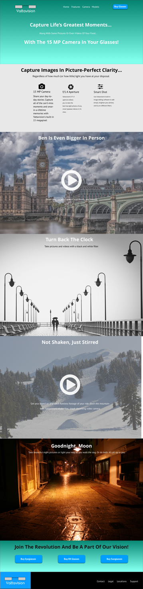

Summary
My task was to design a website for Yattavision that aligned with the organization’s concept for a new, luxurious smartglasses product which emphasizes reliability, as well as physical and emotional wellbeing, as it’s key selling points.
The Problem
With instant access to a computer in your pocket that allows you to make phone calls, send e-mails, keep an organized calendar and browse the web, the smartphone has made life easier for many people in many ways. With that said, the smartphone is not without it’s problems. We’ll look down at our smartphones for extended periods of time, causing back and neck strain. We find ourselves distracted by our phones, both at work and at home. Even when we don’t, they become cluttered with notifications if we leave them unattended. Another common complaint was that voice assistant functionality on the user’s smart devices-regardless of device-is very sluggish and sometimes completely unresponsive.
The Solution
Yattavision brings all of the things that you love about your phone-the apps, e-mails, texts, wireless connectivity and more-and immerses them in a transparent display on these smartglasses that looks as if it is tethered to the real world.
In order to demonstrate the value of a product that people aren’t yet sure they want, I needed to uncover what some of the specific pain points are for smart device users. Armed with this information, I would develop a product page that highlights how this product would solve these pain points. The Yattavision product page would show also being easy to navigate and visually appealing. I knew that I needed to show how the product would eliminate the need for a smartphone and/or tablet and allow you to experience life through your own eyes, rather than through that device’s screen.
VIEW THE YATTAVISION WEBPAGEUser Survey
Several common trends were unearthed through a user survey:
-
-The majority of respondents (63.6%) were between ages 25 and 34, while another 18.2% were between the ages of 18-24. One user fell in the 35-44 age range and the last user fell in the 55-64 age range.
-
-100% of those surveyed own a smart device. All of the respondents own both a laptop and a smartphone, while all but one also own a tablet.
-
-Of the initial 11 respondents, only one of them did not own at least one pair of glasses.
-
-30% of respondents use their glasses all the time, while 50% use them at least a few times per week, if not every day. The remaining respondents use their glasses at least once a month.
-
-66.7% (8 users) of those surveyed utilize voice recognition software on their smart devices, but half of these users have mixed reviews of this software, finding it “inconvenient or embarrassing to use” and “not always accurate.”
-
-The most common frustrations shared among smart device users are that they experience:
a) an onset of poor posture (45.2%)
b) back, eye and/or neck strain (18.2%)
c) distraction and/or disengagement from friends and family (36.6%)
User Personas

John, 28, noted that he is also easily distracted by his smartphone while out with family and friends, adding that it can become so distracting that he will disconnect from ongoing conversations to answer a text or check the sports scores. John also finds that voice recognition software-Siri, in his case-does not respond accurately or effectively to his queries, so he rarely uses it and has to rely on touch navigation. In an ideal world, having an LTE-capable pair of eyeglasses with effective voice recognition software and smartphone functionality would be a very appealing prospect to him.
Mike, 28, a Video Editor in Pearl River, New York, is completely reliant on his glasses to see and would love the ability to have turn-by-turn directions on his glasses, both to get him where he needs to go and keep him from becoming distracted (by having to look down at his phone.) Mike-like so many others of the Millennial generation-finds himself reaching for his phone every time it buzzes, as he is often needed for work at unique hours. It would be tremendously helpful for him if notifications could be delivered directly to his glasses, as that would help keep him on top of his work at all times and prevent distraction while driving or when he is out with family and friends.
Anna, 24, a Business Development Manager in Manhattan, loves that she can browse social media and watch Youtube on her smart devices (iPhone SE and iPad Mini) on her commute to and from the city everyday. However, she experiences back/neck pain and posture issues after prolonged use. She works in front of a computer screen all day, so she is looking avoid eye strain whenever possible.
Maggie, 64, finds today’s technology confusing and difficult to use. The screen on her iPhone 6S is too small for her fingers and she stated that ”a device that gives me the convenience of my iPad and iPhone that would use only hand gestures and voice control would help to alleviate a lot of my frustration.”
User Stories
I allowed multiple answers to several questions to gather the best possible user stories. I first asked what the greatest benefit would be for the potential user. 36% of users stated that the greatest potential benefit of smartglasses would be the ability to have integrated GPS navigation, while another 36% would find the ability to do hands-free multitasking without a second screen to be the greatest benefit. After gathering this information, I asked what each user would use the device for. 10 out of 11 respondents stated they would use Yattavision for turn-by-turn directions, 64% of users stated they would use Yattavision to scan for product information and reviews, 54% would use it to take photos and 44% would use the device to browse the internet. Specific user stories that emerged were as follows:
a) As a user, I would buy Yattavision glasses if they were affordable.
b) As a user, I would buy Yattavision glasses if they gave me the functionality of my smartphone, while alleviating my neck strain and posture issues.
c) As a user, I would buy Yattavision glasses if they allowed me to experience life through my own eyes, rather than through a device screen.
User Flows And Sitemap
Next, I designed user flows for the key navigations throughout the app. The first three fleshed-out user flows illustrated what a user could expect upon visiting the landing page, how a new user would sign up, how a returning user would sign in. The final user flow demonstrated the shared tasks that each user could take part in from the dashboard. I also created a site map that would show the overall flow of the app.
Competitive Analysis
Before I proceeded any further in the design process, I stopped to examine what the competition was doing, specifically honing in on the content and style of their product pages. Microsoft’s Hololens, Snap’s Spectacles and Moverio’s BT300 were the three competitors I chose to examine.
Hololens:
-
Is a headset with a screen attached to the face that is controlled by turning your head and utilizing hand gestures, in addition to recognizing voice commands.
-
Runs Windows 10, which enables compatibility with several different devices, while connectivity to Skype and the ability to play PC and Xbox games is also a major plus.
-
The price (starting at $3,000 USD) is tremendously high and there are no plans for a consumer version until at least 2019.
-
By the time it reaches the market, it could be forced to play catch up with competitor offerings from the likes of Apple, Facebook, Google, etc. who have already seen what Hololens can do and will have the opportunity to craft a better product at a lower price.
Spectacles:
-
These are sunglasses first, then a camera that can also take 10-second videos and sync to Snapchat.
-
A great value for the price at $129.00.
-
The checkout process on the Spectacles website is lengthy-it brings you to three separate screens after clicking to buy.
-
If a competitor could match, or come close, to the Spectacle price with all the features of a smart device built-in, Snap could be in trouble.
Moverio BT300
-
These glasses are ideal for those who like to fly drones, capturing and monitoring their flight from a first person view.
-
These are powered by the Android OS and also offers built-in GPS navigation and bluetooth/wireless connectivity.
-
Several reviews state that the app store and UI are very clunky and difficult to maneuver, also noting that there are a limited number of apps available for the device.
Branding/Style Guide


As I began to design the logo, I knew I wanted something that personified the product I was showcasing. I first started with sketches of my own glasses, then created a very simplistic glasses logo in Illustrator. After placing it on the mockup pages, I felt (and user testing confirmed) that it felt disconnected from the rest of the page, which had more rounded buttons and rounded placeholders. I went back to the drawing board and created a more abstract design that focused solely on the AR scanner that differentiates the product from the competition.
I knew that I wanted to choose a font that would be easy-to-read and comfortable for users of all ages, across all devices. I chose Bariol because-as noted by Atipo, the creator of the font-it is “friendly and close without being excessively sweet, and very readable, even in small sizes, thanks to its sober shapes and simple construction.”
The key when designing Yattavision’s brand identity was to create one which evoked emotions of reliability, this being a product you can trust-hence the blue-and a color that represented a healthier lifestyle. Green would prove to be the go-to, call-to-action color that directs users to the successful end result of signing up for product notifications. To round out the color scheme, I went with white-to denote the freshness and simplicity of this new product-and black, which evokes feelings of luxury and sophistication.
Low Fidelity Wireframes
For the initial user flow and wireframes, I took the feedback that I received from user interviews and user surveys and translated those into a four page website that would demonstrate how Yattavision would alleviate the frustrations of the average smart device user. Drawing inspiration from Apple’s iPhone website, Samsung’s Galaxy website and Snap’s Spectacle website, the idea was to create a responsive website with a main landing page, a features page, a page showcasing the camera’s features and a purchase page. I created mockups that were optimized for desktop/laptop viewing first, but would also account for those who view the website on a smartphone or tablet. The site would have large, bold text which would be easy to read, regardless of backdrop and/or opacity.
High Fidelity Wireframes
- 
Next, I began designing high fidelity wireframes in Adobe Illustrator. I made a few changes made from the initial wireframes, which were:
-
1. The images in each section were made slightly smaller-940x600 instead of 1000x600.
-
2. The off-center “Buy RX Glasses” call-to-action button was brought back up several pixels to be aligned horizontally with the “Buy Eyeglasses” and “Buy Sunglasses” section, before being changed to just one single, centered, “Buy Glasses” button.
-
3. The placeholder under the “Meet Yattavision” section of the landing page was removed and the header and sub-headline font sizes were decreased from 48 and 36 px, respectively to 30 and 25 px, respectively. The rest of the text sizing was decreased as well, in order to give the page a better sense of hierarchy and readability.
-
4. I went with an Open Sans font across the pages, rather than having PT Sans as paragraph text as well.
-
5. The features page remained the same, while I altered the Camera page to remove the top image and lay the features of the camera out on a blank background.
-
6. The pricing pages were redesigned to keep with the rounded rectangle input field scheme and give the page a cleaner, crisper look.
After this round of iterations, I could tell the four page design just wasn’t working. I felt that I was not effectively conveying the lessons I’d learned about good design and color theory. The design was admittedly, mediocre at best. Subsequent user testing and an initial assessment confirmed these thoughts. I went back to the drawing board and decided to simplify the design to a one-page product showcase that would focus more on displaying what I’ve learned about effective use of white space, page hierarchy and effective color use.
Initial user feedback showed that the neon colors were sometimes difficult to read, with mentors Jenna and Chris commenting that it would be better to center on a blue or green color and work with different shades of that color to create an appealing design. I settled on a darker blue, #264EBF, and went to work crafting a design that revolved around different shades of that color, with #009700 serving as the clear “call to action” color-a contrast from the different shades of blue. The final result-along with mockups of how the site would display on a tablet and mobile phone-can be seen below.

User Testing
My first user test was with Veronica, 28, a Senior Marketing Communications Specialist in New York, New York. She works with the Product Development and Brand Marketing teams, utilizing their research and combining that with her creativity, to produce effective marketing and public relations campaigns. At first glance, Veronica noted that the logo is “a little confusing.” She wasn’t sure what it represented and at suggested just going with a text logo. As she read on, she understood the significance of the logo and how it ties in with the product.
She thought that improvements could be made to the copy within the website. Starting from the top, she liked the “Meet Yattavision” line, but thought that the subheadline should be stronger-saying something like “The AR Frames you can wear all day,” as this would better help to explain what the product is right away. She noted that the page was coming off as “very salesy.” She said that the “Why Yattavision? We Do What The Competition Doesn’t!” headlines should be changed-she noted “this is an experiential product-you have to make the customer feel like they are about to use it.” She thought I should go for something more like “Yattavision Turns Virtual Experiences Into Reality” and “Take A Trip And Experience Virtual Reality.” I made some cosmetic changes to update the copy in these areas.
On the Features section, Veronica thought some of the language was repetitive (i.e., so I cut out some of the text in these sections and altered for better copy. For example, “Capture all of the can’t miss moments and once-in-a-lifetime memories” was shortened to just “Capture all the can’t miss moments…” She also suggested tying it back to both the ease of use and social media connectivity, so I added a line about instantly uploading photos to social media. I also altered the text on the Yattassistant section to highlight it’s functionality and how easy it is to use. Veronica also suggested moving the “Stay Connected” section to the bottom of the page and/or doing something to reinforce the social media connection to the product near the bottom of the page as well to drive the point home.
Overall, Veronica thought that the site looked “really good,” but that the suggested improvements would help to take the page a step further. With that, we concluded our test.
My second user test with was with Austin, 29, a Fundraising Account Manager in Buffalo, New York. He was able to correctly identify what the product was, noting that it looked like a more advanced set of Snapchat glasses. He said that-from a UI perspective-having things pop up while he is driving would be distracting and "freak me out." He could not correctly tell what every application under the App section and found it cramped, so I revised that in this final interaction to remove the lesser known apps (i.e. LastFM) and cut the number of apps listed from twelve to six. One of the key things that he mentioned was that he liked the "call to action buttons" at the top and bottom of the page. He did suggest changing the button on the top to say “Sign Up” instead of “Buy Glasses,” since they were not yet available. The second key suggestion that he made was to place social media icons on the footer of the page, as he sees that many of the companies he works with do this. Overall, he thought everything about the site made sense-"the design looks very professional, the typography is easy to read and explains what the product is and does. There’s nothing on the site that is convoluted or confusing."
The next user test I conducted was with Shawn-a former self-taught Javascript developer-and his wife, Liz, who studies Psychology for a living. Shawn said it is a very clean looking website-he can easily tell that these are glasses which offer Augmented Reality technology. They liked the way that the features icons and text were laid out and spaced. Liz has spent a lot of time researching the Snapchat Spectacles, so she likes that this is a much more upscale product, which appears more elegant and sophisticated when compared to the former. They noted that in keeping the headlines and subheadlines consistent, it helps to train your eyes for where to look. She noted that she has degenerative eye troubles, so the font was very easy to read and she did not have any problems reading through the page on her iPhone. Shawn also said that he liked that he doesn't have to look hard to find the information he wants on the site-it's very explanatory and "official-looking." He did say however, that it looks like every other start up website that he has seen. He noted that this is not a bad thing, but felt it looked more like a brochure than a product page. He said that there was not much else he could comment on as it was a one-page showcase and not a multi-page site. Overall, he thought it was well-done, but thought that a finalized, responsive website would successfully bring these ideas together. This concluded my user test with Shawn and Liz.
VIEW THE YATTAVISION WEBPAGEConclusion
In conclusion, I feel that I was able to put forth a cleaner, crisper design that is much more user-friendly than the first two iterations. I think the things that definitely worked best here were the finalized color scheme, user interface and the decision to go with a one-page page layout.
Looking back now, it’s easy to see where I made the wrong choices. I’m much happier with the third iteration of the Yattavision project than I was with the first two. Now that I’ve struggled through those first mockups of the Yattavision project, I’ve learned that I need to do a better job of realizing when an idea isn’t working and shift gears immediately. If I had more time, I definitely would have experimented more with gradients and shadows on the actual mockups themselves and I would have done more extensive sets of A-B testing to finalize the original Model and Pricing pages earlier than I did. I’ve learned a lot about the principles of design and how to pick and implement an appropriate color scheme. I know that these lessons will help me to continue to improve as a designer.
RETURN TO HOMEPAGE